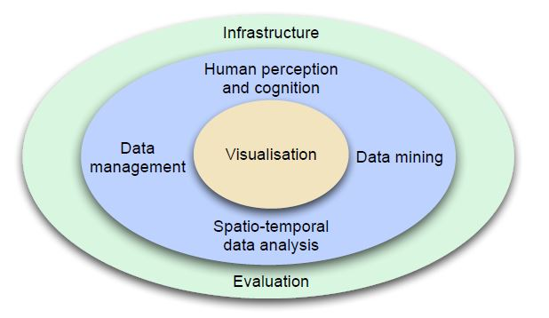

Summary of the visual analytics process
What Visual analytics is?
"Visual analytics combines automated analysis techniques with interactive visualizations for an effective
understanding, reasoning and decision making on the basis of very large and complex datasets".
The goals of visual analytics are:
- Synthesize information and derive insight from massive, dynamic, ambiguous, and often conflicting
data.
- Detect the expected and discover the unexpected.
- Provide timely, defensible, and understandable assessments.
- Communicate these assessments effectively for action.
Visual analytics integrates science and technology from many disciplines, as shown in Figure

What Data management is?
Data management provides methods for effectively dealing with large datasets. The techniques aim to ensure data consistency, avoiding duplication and handling data transactions in a formal way.